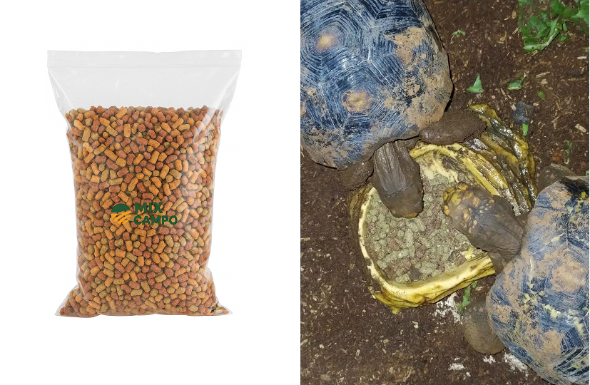

Ração para Tartaruga Terrestre, Jabuti e Iguana

A ração extrusada Mix Campo foi desenvolvida para oferecer uma alimentação completa e balanceada para jabutis, tartarugas terrestres, iguanas e outros répteis herbívoros ou onívoros.
Benefícios
- Alimentação completa.
- Alta digestibilidade.
- Enriquecida com frutas e vegetais.
- Contém insetos e minhocas.
- Alta palatabilidade.
- Auxilia no desenvolvimento saudável.
Espécies Indicadas
- Jabuti-piranga.
- Jabuti-tinga.
- Tartarugas terrestres.
- Iguanas.
- Outros répteis de hábitos semelhantes.
Mix Campo, ração Mix Campo, produtos Mix Campo, alimentação para peixes Mix Campo